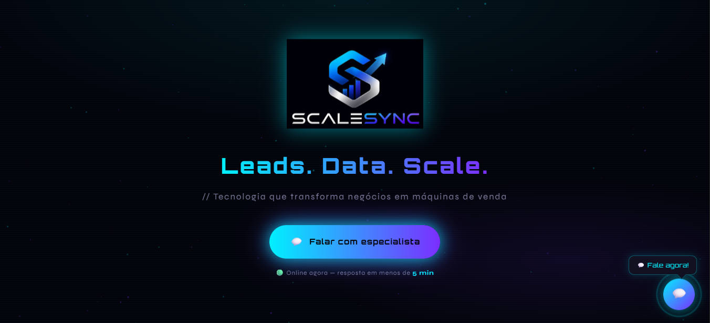

ScaleSync
Desenvolvimento de um site moderno e estratégico para a ScaleSync, com foco em identidade visual, presença digital e experiência do usuário. O projeto foi criado para transmitir inovação, profissionalismo e credibilidade, utilizando um design responsivo, intuitivo e alinhado às tendências atuais do mercado digital.
Plataforma moderna focada em automação,
métricas e crescimento digital.

Voz do Povo
Projeto que surgiu dentro da faculdade com o propósito de unir tecnologia, impacto social e inovação, criando uma ponte entre população e prefeitura através da tecnologia.
🚧 O projeto ainda está em desenvolvimento, mas já estamos compartilhando todo o processo, evolução, desafios e bastidores dessa construção nas redes sociais.